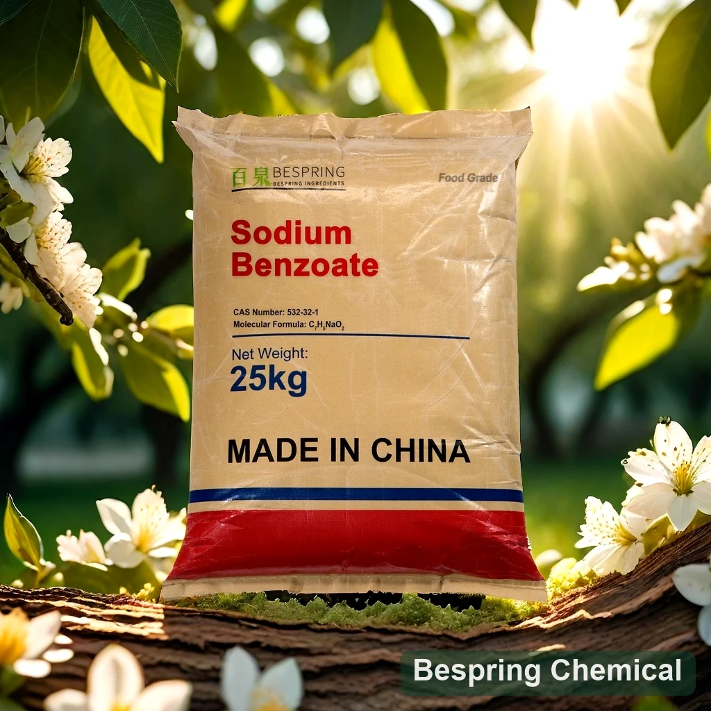
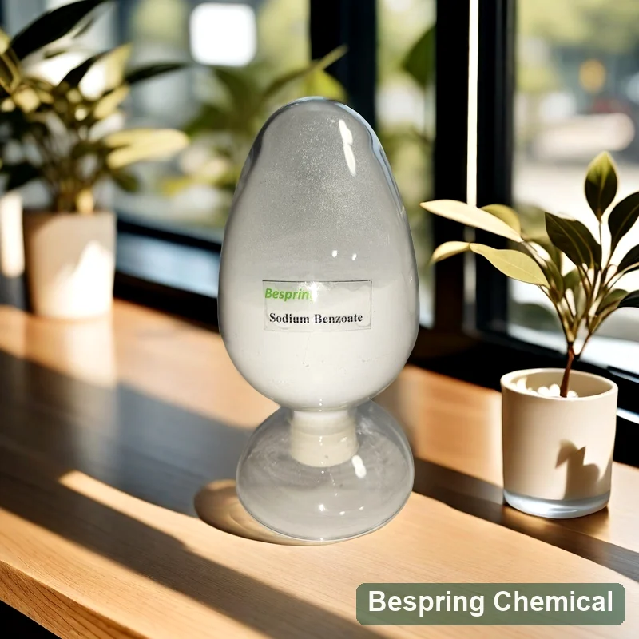
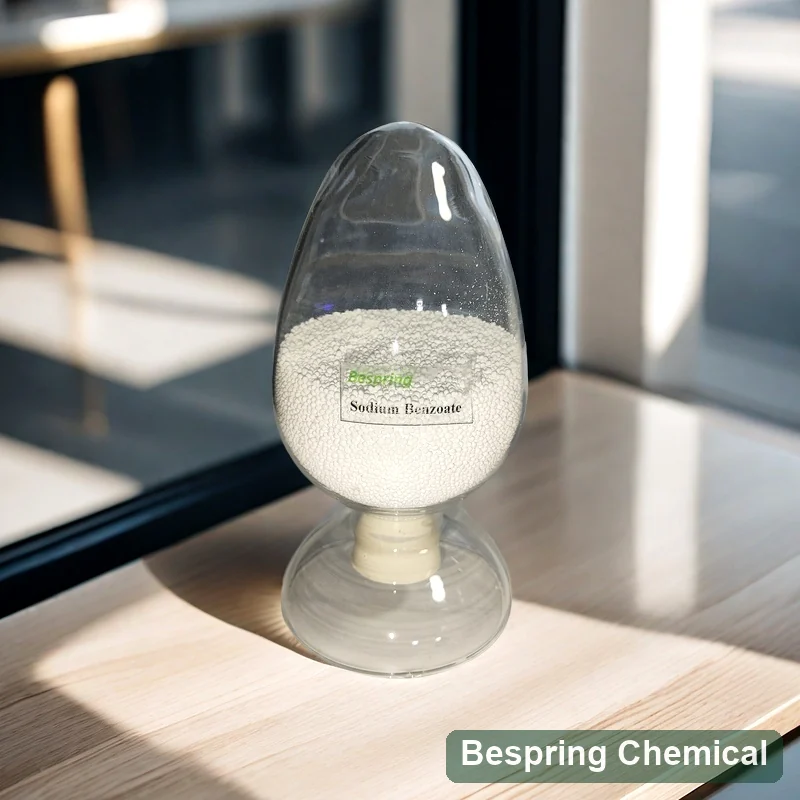
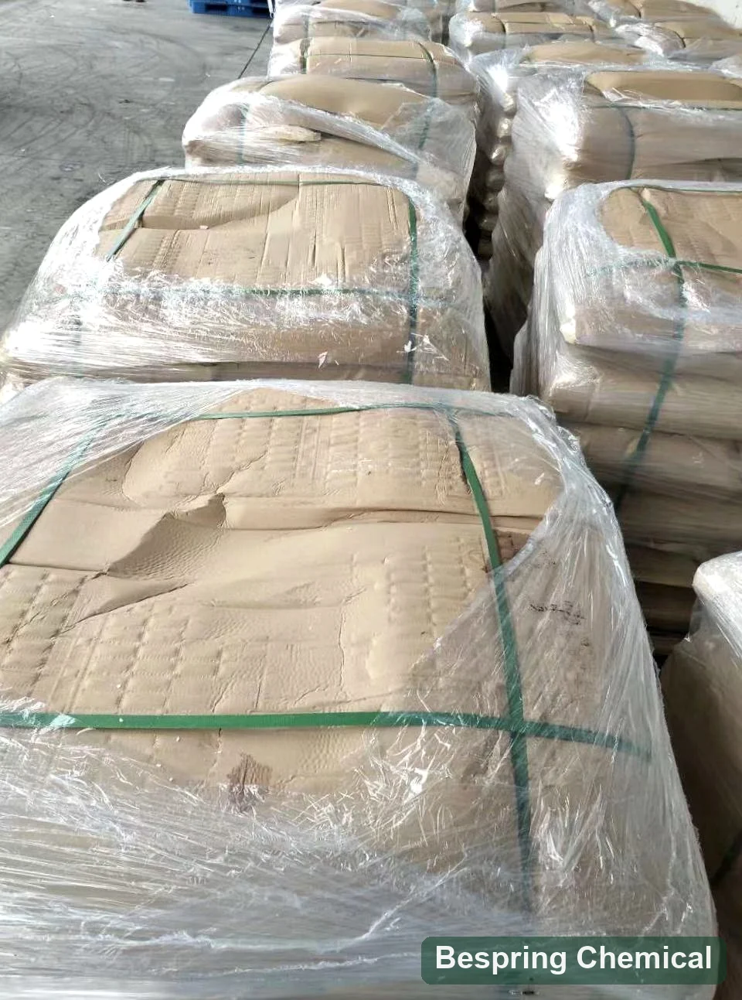

Équilibre pH
Mesurer le produit fini après la transformation et l'équilibre. Le type d'acide, la capacité tampon et les particules peuvent rendre la lecture des ingrédients trompeuse.
Préservateur alimentaire · Systèmes acides · E211

Image du produit · confirmer la qualité et l'emballage lors de la commande
Partager la forme des particules, les spécifications, le pH des aliments finis, les risques de la formule, la quantité, l'emballage et la destination.
Choix de particulesPoudre · sphérique · granules cylindriques
Emballage de référenceSac tissé de 25 kg
MOQ de référence500 kg
Qualification par lotsSpécification et ACO sur demande
Identité du produit
Le benzoate de sodium est le sel de sodium de l'acide benzoïque. JECFA l'identifie comme INS 211, CAS 532-32-1, formule C7H5NaO2 144.11. Il est librement soluble dans l'eau et fourni commercialement sous forme de poudre cristalline, de flocons ou de granulés.
Après la dissolution, le benzoate participe à l'équilibre benzoïque-acide. C'est pourquoi l'acidité du produit fini est au cœur de la performance et pourquoi la dose d'ingrédient seul ne peut prédire la stabilité microbienne ou la durée de conservation.
Conception du système de conservation
Le benzoate de sodium fait partie d'une stratégie d'obstacle, et non d'une stratégie extérieure. Définissez les variables de formulation et de procédé avant de choisir un échantillon de fournisseur ou d'interpréter un résultat de durée de conservation.
Mesurer le produit fini après la transformation et l'équilibre. Le type d'acide, la capacité tampon et les particules peuvent rendre la lecture des ingrédients trompeuse.
Identifiez les levures, les moisissures et les bactéries pertinentes en plus de la charge initiale. Ne décrivez pas le benzoate comme un contrôle pathogène universel.
Examiner le traitement thermique, le temps de rétention, le refroidissement, le remplissage et la contamination post-processus. L'utilisation de conservation ne valide pas un processus thermique inadéquat.
Défier le paquet final dans des conditions réalistes d'oxygène, de lumière, de température, de transport et d'ouverture après les lots répétés.
Un ACO peut démontrer le lot de benzoate de sodium testé en fonction d'une spécification convenue. Il ne peut démontrer qu'une boisson, une sauce ou un remplissage satisfait aux critères microbiologiques, sensoriels ou d'acceptation de la durée de conservation.
Voies d'application
Il s'agit de voies de formulation, non d'approbations universelles ou de niveaux d'utilisation. Confirmez la catégorie exacte d'aliments, la teneur maximale et les exigences de déclaration pour le marché de destination.
Évaluer : pH, acidité titrable, système de benzoate/ascorbate, saveur, processus, lumière, température et durée de vie de l'emballage.
Évaluer : la distribution des acides, les phases huile/eau, les particules, le processus de remplissage à chaud ou à froid, l'emballage et l'utilisation après ouverture.
Évaluer : pH d'équilibre, résistance à la saumure, distribution solide-liquide, procédé thermique, intégrité des joints et stockage.
Évaluer : solides solubles, activité de l'eau, pH, dommage ciblé, qualité sensorielle et contamination après traitement.
Point de contrôle de la formulation des boissons
La FDA des États-Unis signale que le benzène peut se former à très faible teneur dans certaines boissons contenant à la fois des sels de benzoate et de l'acide ascorbique (vitamine C) ou de l'acide érythorbique.
Il s’agit d’un problème de formulation et de stockage de la boisson finie, et non d’une preuve que toute boisson contenant du benzoate forme du benzène. Examinez la recette complète, les contrôles de l’eau brute et des ions métalliques, le procédé, l’emballage, l’exposition à la lumière, la température et une vérification analytique adaptée.
Données techniques spécifiques à la source
Le tableau reproduit la pièce jointe fournie pour la présélection des achats. Les étiquettes ambulantes restent marquées plutôt que réécrites silencieusement. La spécification, les méthodes et l'expédition signées L'ACO régit l'acceptation.
Balayez l’écran ou utilisez le clavier pour consulter toutes les colonnes
| Élément d ' essai | Valeur de référence | Exigences en matière d'achat |
|---|---|---|
| Apparence | Poudre ou granulés blancs | Confirmer la poudre, la forme sphérique ou cylindrique |
| Teneur, base sèche | ≥ 99.0% | Correspond au minimum au JECFA; méthode de confirmation |
| Acidité | ≤ 0.2 mL | Titre, normalité et base d'échantillonnage non indiqué |
| Humidité | ≤ 1.5% | Vérifier si l'équivalent de la DL et de sa méthode |
| Essai de solution aqueuse | Effacer | Confirmer la concentration et la méthode visuelle |
| Métaux lourds, en Pb | ≤ 10 mg/kg | Pas un résultat de plomb séparé |
| Arsenic | ≤ 2 mg/kg | Valeur de référence |
| Chlorure | ≤ 0.02% | La définition diffère de la définition ci-dessous. |
| Sulfate | ≤ 0.1% | Valeur de référence |
| Oxides | Satisfait aux exigences | Préciser l'identité et la méthode du test |
| Couleur de la solution | Y6 | Demande de comparateur/méthode |
| Les phthalates | Satisfait aux exigences | Préciser les analytes et la méthode d'essai |
| Chlorure total | ≤ 0.03% | Résoudre contre le chlorure ≤ 0.02 % |
| Autres limites | Comme convenu avec le client | Doit être fixé dans le cahier des charges |
Confirmer la base de l'analyse, la méthode de perte à l'état de séchage, le plomb, l'acidité/alcalinité et les tests d'impureté pertinents pour la qualité requise.
Revoir la FAO/OMS Monographie du JECFA sur le benzoate de sodium, Groupe de benzoates du Codex GSFA et les FDA boissons benzène Q & A. Ces sources publiques ne prouvent pas un lot de Bespring ou une autorisation de marché universelle.
Contenu technique examiné à la lumière des références publiques citées le 22 août 2026. Les spécifications commerciales et les exigences du marché de destination doivent être reconfirmées.
Forme physique et logistique
La forme des particules affecte la poussière, le débit, le dosage, la dissolution et le chargement du contenant; elle ne change pas l'identité chimique du benzoate de sodium.
Évaluer le contrôle des poussières, le comportement de l'alimentateur, la procédure de dissolution et la charge de référence palettisée de référence de 16 MT non palettisée ou 12.5-13 MT déclarée par 20GP.
Évaluer le débit, l'attrition et la dissolution; la charge de référence fournie est de 20 MT sans palettes ou de 16 MT avec palettes par 20GP.
Évaluer l'ajustement, la rupture et la dissolution de l'alimenteur; la charge de référence fournie est de 15.5 à 16 MT sans palettes ou de 12 à 13 MT avec palettes par 20GP.
Demander la spécification/le DTS actuel, la FDS, l'ACO représentative, l'ACO expédition et seulement les certificats qui s'appliquent au produit exact et au site de fourniture.
Sélection de réserve
Comparer les organismes cibles, la réponse au pH, l'équilibre sorbique-acide, le profil sensoriel et les preuves du produit fini.
Comparer la forme acide, la solubilité dans l'eau, la méthode d'addition, le pH et la base acide active.
Comparer la fonctionnalité acétate/acide acétique-acide, la contribution de saveur, l'ajustement d'application et la stratégie de sodium.
Comparer les cibles de moisissures et de cordes de boulangerie, la compatibilité de la pâte et les conditions du système de préservation.
Stockage et manipulation
Questions de l'acheteur
Après dissolution, il participe à l'équilibre benzoïque-acide. Le pH du produit fini et le tampon affectent la proportion d'acide benzoïque non dissocié, de sorte que les performances doivent être testées dans la formulation réelle.
La FDA signale que de très faibles concentrations de benzène peuvent se former dans certaines boissons contenant des sels de benzoate avec de l'acide ascorbique ou érythorbique, et que la chaleur et la lumière peuvent stimuler la formation dans certaines formulations.
Non. Il peut contribuer à un système d'obstacles validé, mais il ne valide pas un procédé thermique inadéquat, une mauvaise hygiène, un emballage inapproprié ou un stockage incontrôlé.
Ils ont la même identité chimique, mais peuvent différer en ce qui concerne la poussière, le débit, le comportement de l'alimenteur, la dissolution et le chargement du contenant.
Les informations fournies indiquent 25 kg de sacs tissés et un MOQ de référence de 500 kg. La charge des conteneurs varie considérablement selon la forme des particules et la palettisation.
Fournir la norme, la forme des particules, la catégorie des aliments, le pH final, le système complet de conservation/antioxydant, les limites critiques, la quantité, l'emballage, la destination, les certificats et la date cible.
Dernière révision technique le 22 août 2026 par l'équipe technique et d'exportation de Bespring Chemical.
Continuer votre évaluation
Références concernant le produit, l'emballage et la manutention
Ces photographies fournies montrent des formes d'échantillons de benzoate de sodium et une référence de sacs palettisés.



Approvisionnement fondé sur les spécifications
Partagez le produit, la formulation et les détails logistiques nécessaires pour correspondre à l'offre et aux documents de qualification.
Dites-nous votre marché de qualité et de destination afin que nous puissions confirmer quels documents sont disponibles pour votre commande.
Une référence externe n'est pas un certificat de lot ou une spécification de produit Bespring.